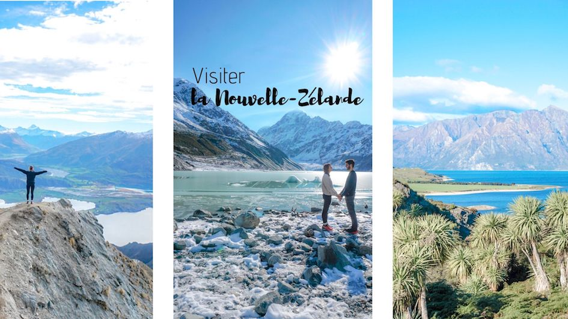

RÉUSSIR VOTRE VOYAGE EN NOUVELLE-ZÉLANDE
LES CONSEILS D'OLIVIER, Globe-Trotter,
Pour votre voyage nature et sur les traces de TOLKIEN
La Nouvelle-Zélande est un pays situé au sud-ouest de l'océan Pacifique et composé de 2 îles principales abritant toutes deux des volcans et des glaciers. Le vaste musée national Te Papa Tongarewa se trouve sur l'île du Nord, à Wellington, la capitale. Le mont Victoria ainsi que le Fiordland et les Southern Lakes de l'île du Sud ont servi de décor aux célèbres films de la saga "Le Seigneur des anneaux" de Peter Jackson. Évitez de visiter la Nouvelle-Zélande en hiver car il pleut beaucoup et s'agissant d'une destination « plein air » vous aurez du mal à en profiter au maximum de votre voyage si vous partez à cette saison. L'été reste la meilleure période avec des températures tournant entre 20 et 30 degrés selon les jours.

IMMERSION AVANT VOTRE VOYAGE

Conseils pour organiser votre voyage
Que voir?
-
La baie d’Halong
Classée au patrimoine mondial de l’UNESCO, cette escale emblématique du Vietnam vaut le détour. Ce paysage maritime tout à fait spectaculaire compte plus de 1600 îlots et massifs granitiques, disséminés dans le golfe du Tonkin. -
Hanoï
La plus ancienne capitale d’Asie dégage un charme incroyable. Savoureux mélange de culture asiatique et d’architecture coloniale, Hanoï ne laisse aucun visiteur indifférent. -
Hué
Classée au patrimoine mondial de l’UNESCO, la cité impériale de Hué offre une expérience hors du temps, à la découverte de temples et monuments somptueux. Sa citadelle inspirée de la Cité Interdite vous donnera un aperçu de la splendeur passée des dynasties du Vietnam. -
Hoi An
La cité aux lampions, est sans aucun doute une des plus belles escales du Vietnam. Quel bonheur de déambuler dans le coeur ancien, en découvrant les façades colorées des maisons coloniales… -
Sapa et les montagnes du nord Vietnam
Découvrir à 1650 mètres d’altitude la station construite par les Français dans les années 1920 entourée de rizières à perte de vue et partir à la rencontre des minorités ethniques du nord Vietnam. -
Le Delta du Mékong
Le temps d’une croisière en barque, vous pourrez explorer la mangrove, découvrir les marchés flottants et les superbes maisons en teck héritées de l’époque coloniale.
Que faire?
-
Faire une balade en cyclo-pousse
Importés au XIXe siècle sous la colonisation française, les cyclo-pousses sont encore nombreux dans les villes vietnamiennes. C'est une manière originale de visiter Hanoi, Ho Chi Minh, Hoi An ou encore Hue. -
Explorer la campagne vietnamienne en vélo ou en scooter
N’hésitez pas à louer une bicyclette ou un scooter pour partir explorer les rizières et aller à la rencontre des habitants. -
Prendre un cours de cuisine vietnamienne
Apprendre plus sur la gastronomie vietnamienne en suivant les conseils des meilleurs chefs vietnamiens. De Ho Chi Minh à Hanoï il existe de très nombreuses écoles de cuisine au Vietnam. -
Faire une croisière sur la baie d’Halong
Activité incontournable à faire au Vietnam. Découvrir la baie à bord d’une jonque ou d'un catamran est toujours une expérience inoubliable. -
Mui Ne
Découvrir le village de Mui Ne et ses plages à l’eau turquoise bordées par d’immenses dunes de sable dorées, un décor hors du commun. -
Phu Quoc
Phu Quoc est tout simplement la plus belle île du Vietnam. Ce petit morceau de terre situé à la frontière du Cambodge dispose d’une multitude de plages paradisiaques au sable fin, où vous pourrez sans problème lézarder.
Quelles sont les spécialités culinaires du pays ?
-
Le phở
C'est le plat national vietnamien par lequel débute toute journée et qui peut se consommer à tout moment de la journée. La base est faite d'un bouillon de boeuf avec du jarret et des os à moelle, cuit pendant des jours si possible, avec de l'anis étoilé, des bâtonnets de cannelle, du gingembre et de l'oignon grillés, de la cardamome brune et parfois des clous de girofle. On y ajoute des nouilles de riz, de la viande de bœuf coupée en fines tranches -
Cà phê
Au même titre que le Phở, le café est un incontournable du Vietnam. Le Vietnam est un producteur de café, héritage colonial française, vous pouvez visiter les plantations à Đà Lạt. Une préférence pour le cà phê sữa đá qui n’est autre qu’un café glacé avec du lait concentré. -
Chè
Ce dessert vietnamien traditionnel est fabriqué à base du lait de coco avec de différentes garnitures comprenant des haricots mungo, des haricots rouges, du tapioca, du manioc, du taro, des patates douces, du riz gluant, de la gelée, etc., ainsi que des fruits frais comme les bananes, le jacquier, le durian, les mangues, etc. -
Bánh xèo
C’est une crêpe à base de coco, de farine de riz et de curcuma, puis farcie d’un mélange d’herbes, de porc et de crevettes.
Shopping et artisanat. Que ramener?
-
Des lanternes de Hoi An
A l’occasion de la fête de la Pleine Lune, Hoi An est connue pour être la ville des lanternes. Faites de soie, elles existent dans toutes les tailles et toutes les couleurs. -
Une tunique traditionnelle
L’áo dài, tunique traditionnelle vietnamienne en soie, composée d’une robe et d’un pantalon, elle est à l’origine blanche mais se décline dans de nombreuses couleurs et motifs. -
Les articles de bambou et de rotin
vases, corbeilles, plateaux, abat-jour et assiettes à fruits.. -
La céramique
L’art de la céramique vietnamien est aussi ancien que l’histoire du Vietnam. Avec un savoir-faire unique et une identité fortement marquée, les produits ont atteint une très bonne réputation et une qualité irréprochable.
Quelle hygiène et sécurité sur place?
-
Vaccins
Il n’y a pas de vaccins obligatoires pour venir au Vietnam en provenance de l'Europe. Il est tout de même conseillé d’effectuer les vaccins universels (diphtérie, tétanos, polio, hépatite B) et d’être vacciné contre la typhoïde et hépatite A. En cas de séjours ruraux de longue durée ou de contact avec les animaux, il est également conseillé d’être vacciné contre la rage et l’encéphalite japonaise. Pour un séjour classique, il n’est pas nécessaire, selon nous, de suivre un traitement antipaludéen. Il est également deconseillé de boire l'eau du robinet.
Nos coups de coeur

Grimper en haut des Tours Petronas
Activité incontournable à Kuala Lumpur, l’ascension des tours jumelles permet de profiter d’un panorama vertigineux sur la capitale malaise. Elles appartiennent à la société de pétrole et culminent à 452 mètres, pour 88 étages.
Visiter Georgetown à Penang
Dans Chinatown et Little India, découvrez la cité coloniale classée au patrimoine mondial de l’UNESCO: son architecture composée de shophouses, maisons de marchands traditionnelles et ses nombreux temples hindous et bouddhistes.
Visiter la mosquée de Cristal à Kuala Terengganu
La Mosquée de Cristal est un des plus beaux exemples d’architecture musulmane.-
Observer la faune sauvage à Bornéo
Explorer la forêt vierge en randonnée et observer d’innombrables espèces animales. Partez à la rencontre des derniers peuples tribaux de Bornéo au cœur de la jungle. 
Faire du snorkeling dans les îles
Prenez la direction des îles de Tioman ou de Perhentian et embarquer pour une sortie snorkeling en bateau, à la découverte des récifs coralliens.
LES ASTUCES D'OLIVIER
- 1En été adaptez votre rythme à la chaleur: la vie à Ibiza est nocturne.
- 2Assurez votre hébergement à l'avance, les endroits vacants en été sont rares.
- 3L'alimentation est importée sur l'île, privilégiez les restaurants de qualité.
- 4Prévoyez des sorties en campagne, la vie urbaine est trépidante.
- 5Formentera est incontournable: retour au calme et à la nature sauvage.
- 6Les voitures de location sont accessibles: à la découverte de l'île!
- 7Enfin mesurez vos comportements, la guardia civil ne pardonne plus les excés.